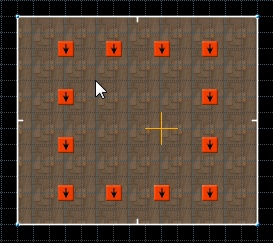
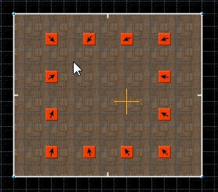

This action can be used to quickly orient things in Things mode. Hold Ctrl key to point away from cursor.
Menu: Things -> Point Thing to cursor.
Found in: Preferences -> Controls -> Things.
Default key: Shift+L.
Example:
Select things and place mouse cursor where you want things to face:

Press action shortcut:
